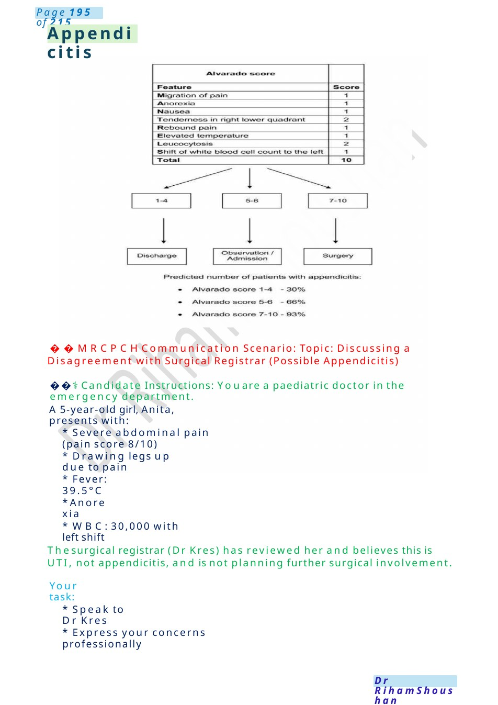
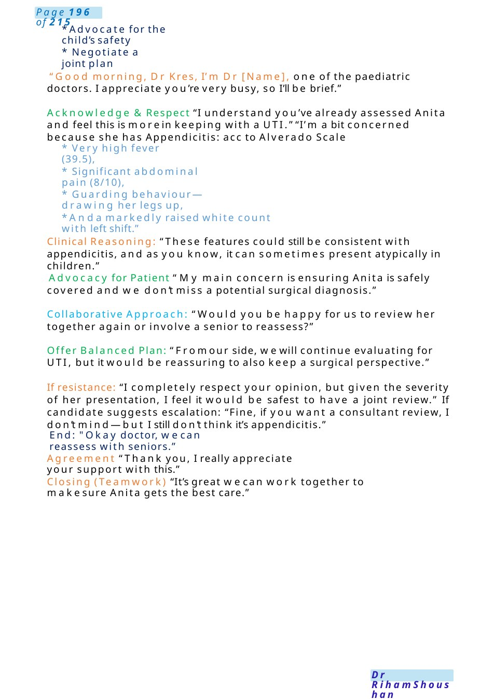
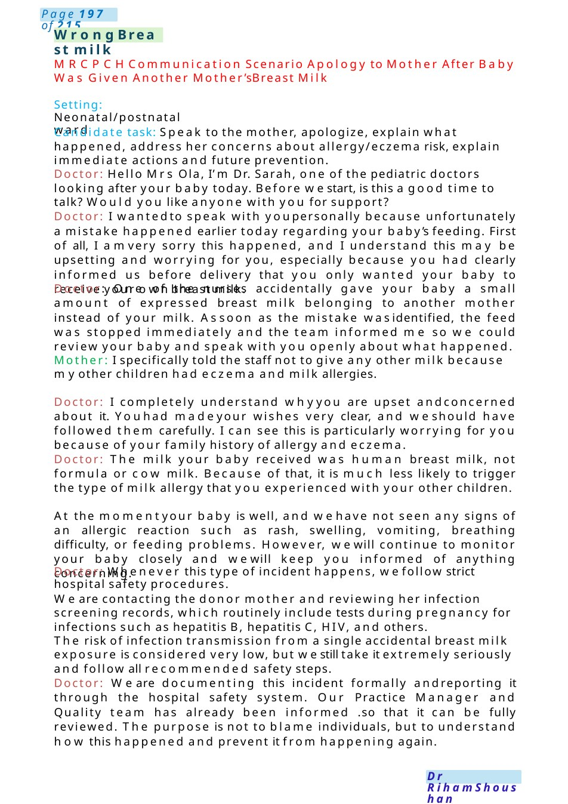

Appendicitis
MRCPCHCommunication Scenario: Topic: Discussing a Disagreement with Surgical Registrar (Possible Appendicitis) ⚕️Candidate Instructions: Youare a paediatric doctor in the emergency department.
Scenario Summary
MRCPCHCommunication Scenario: Topic: Discussing a Disagreement with Surgical Registrar (Possible Appendicitis) ⚕️Candidate Instructions: Youare a paediatric doctor in the emergency department.
Full Original Scenario

Appendicitis
MRCPCHCommunication Scenario: Topic: Discussing a Disagreement with Surgical Registrar (Possible Appendicitis)
⚕️Candidate Instructions: Youare a paediatric doctor in the emergency department.
A5-year-old girl, Anita, presents with:
- Severe abdominal pain (pain score 8/10)
- Drawing legs up due to pain
- Fever: 39.5°C
- Anorexia
- WBC:30,000 with left shift
Thesurgical registrar (Dr Kres) has reviewed her and believes this is UTI, not appendicitis, and is not planning further surgical involvement.
Your task:
- Speak to Dr Kres
- Express your concerns professionally

- Advocate for the child’s safety
- Negotiate a joint plan
“Good morning, Dr Kres, I’m Dr [Name], one of the paediatric doctors. I appreciate you’re very busy, so I’ll be brief.”
Acknowledge &Respect “I understand you’ve already assessed Anita and feel this is morein keeping with a UTI.” “I’m a bit concerned because she has Appendicitis: acc to Alverado Scale
- Very high fever (39.5),
- Significant abdominal pain (8/10),
- Guarding behaviour—drawing her legs up,
- Anda markedly raised white count with left shift.”
Clinical Reasoning: “These features could still be consistent with appendicitis, and as you know, it can sometimes present atypically in children.”
Advocacy for Patient “My main concern is ensuring Anita is safely covered and we don’t miss a potential surgical diagnosis.”
Collaborative Approach: “Would you be happy for us to review her together again or involve a senior to reassess?”
Offer Balanced Plan: “Fromour side, wewill continue evaluating for UTI, but it would be reassuring to also keep a surgical perspective.”
If resistance: “I completely respect your opinion, but given the severity of her presentation, I feel it would be safest to have a joint review.” If candidate suggests escalation: “Fine, if you want a consultant review, I don’t mind—but I still don’t think it’s appendicitis.”
End: "Okay doctor, wecan reassess with seniors.”
Agreement “Thank you, I really appreciate your support with this.”
Closing (Teamwork) “It’s great wecan work together to makesure Anita gets the best care.”

Wrong Breast milk
MRCPCHCommunication Scenario Apology to Mother After Baby Was Given Another Mother’s Breast Milk
Setting: Neonatal/postnatal ward
Candidate task: Speak to the mother, apologize, explain what happened, address her concerns about allergy/eczema risk, explain immediate actions and future prevention.
Doctor: Hello Mrs Ola, I’m Dr. Sarah, one of the pediatric doctors looking after your baby today. Before westart, is this a good time to talk? Would you like anyone with you for support?
Doctor: I wantedto speak with youpersonally because unfortunately a mistake happened earlier today regarding your baby’s feeding. First of all, I amvery sorry this happened, and I understand this may be upsetting and worrying for you, especially because you had clearly informed us before delivery that you only wanted your baby to receive your ownbreast milk.
Doctor: One of the nurses accidentally gave your baby a small amount of expressed breast milk belonging to another mother instead of your milk. Assoon as the mistake wasidentified, the feed was stopped immediately and the team informed me so we could review your baby and speak with you openly about what happened.
Mother: I specifically told the staff not to give any other milk because myother children had eczema and milk allergies.
Doctor: I completely understand whyyou are upset andconcerned about it. Youhad madeyour wishes very clear, and weshould have followed them carefully. I can see this is particularly worrying for you because of your family history of allergy and eczema.
Doctor: The milk your baby received was human breast milk, not formula or cow milk. Because of that, it is much less likely to trigger the type of milk allergy that you experienced with your other children.
At the momentyour baby is well, and wehave not seen any signs of an allergic reaction such as rash, swelling, vomiting, breathing difficulty, or feeding problems. However, wewill continue to monitor your baby closely and wewill keep you informed of anything concerning.
Doctor: Whenever this type of incident happens, wefollow strict hospital safety procedures.
We are contacting the donor mother and reviewing her infection screening records, which routinely include tests during pregnancy for infections such as hepatitis B, hepatitis C, HIV, and others.
The risk of infection transmission from a single accidental breast milk exposure is considered very low, but westill take it extremely seriously and follow all recommended safety steps.
Doctor: We are documenting this incident formally andreporting it through the hospital safety system. Our Practice Manager and Quality team has already been informed .so that it can be fully reviewed. The purpose is not to blame individuals, but to understand how this happened and prevent it from happening again.